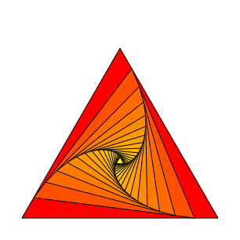
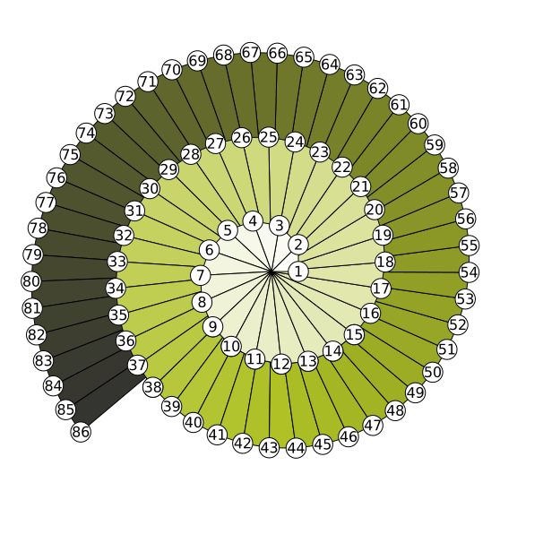
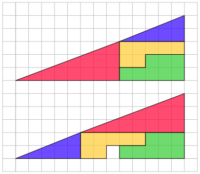
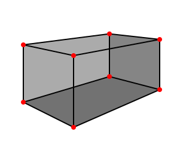
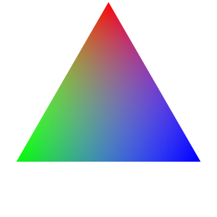
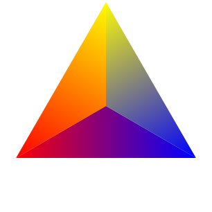

8.1
4 Examples
4.1 Rotating Triangle
This example was inspired by Alain Matthes’s
rotated triangle
TikZ example.
| > (require metapict) |
| > (def N 18) |
| > (set-curve-pict-size 300 300) |
| > (with-window (window -0.1 1.1 -0.1 1.1) | | (defv (A B C) (values (pt 0 0) (pt@d 1 60) (pt 1 0))) | | (first-value | | (for/fold ([drawing (draw)] [A A] [B B] [C C]) ([n N]) | | (def triangle (curve A -- B -- C -- cycle)) | | (def shade (color-med (expt (/ n N) 0.4) "red" "yellow")) | | (def filled (color shade (fill triangle))) | | (values (draw drawing filled triangle) | | (med 0.12 A B) (med 0.12 B C) (med 0.12 C A))))) |
|
 |
4.2 Rooty Helix
The example shows the lengths of sqrt(n) for values of n
from 1 to 86. The design is from Felix Lindemann’s
rooty helix
TikZ example.
| > (require metapict) |
| > (def max-r 86) |
| > (def dark-green (make-color* 175 193 36)) |
| > (def almost-black (make-color* 50 50 50)) |
| > (define (shade r) | | (cond | | [(<= 0 r 1/2) (color-med (* 2 r) "white" dark-green)] | | [(<= r 1) (color-med (* 2 (- r 1/2)) dark-green almost-black)] | | [else (error 'shader (~a "got: " r))])) |
|
| > (define (spiral drawing max-r) | | (def (node p r) | | (def circ (circle p 1.5)) | | (def filled (color "white" (fill circ))) | | (def label (label-cnt (~a r) p)) | | (draw filled circ label)) | | (defv (spiral θ) | | (for/fold ([drawing drawing] [θ 0]) | | ([r (in-range 1 max-r)]) | | (def √r (sqrt r)) | | (def (rotθ c) (scaled 4 (rotated θ c))) | | (defv (A B C) (values (pt 0 0) (rotθ (pt √r 0)) (rotθ (pt √r 1)))) | | (def triangle (curve A -- B -- C -- cycle)) | | (def filled (color (shade (/ r 86)) (fill triangle))) | | (values (draw drawing filled triangle (node B r)) | | (+ θ (acos (sqrt (/ r (+ 1 r)))))))) | | (draw spiral | | (node (scaled 4 (pt@ (sqrt max-r) θ)) max-r))) |
|
| > (set-curve-pict-size 600 600) |
| > (with-window (window -40 40 -40 40) | | (penwidth 0 | | (for/fold ([drawing (draw)]) ([r '(86 38 15)]) | | (spiral drawing r)))) |
|
 |
4.3 Glider - Hacker Emblem
This figure is a glider, a hacker emblem. The inspiration was
Alex Hirzel
Glider.
| > (set-curve-pict-size 100 100) |
| > (with-window (window 0 3 0 3) | | (margin 5 | | (draw (grid (pt 0 0) (pt 3 3) (pt 0 0) #:step 1) | | (for/draw ([p (list (pt 0 0) (pt 1 0) (pt 2 0) (pt 2 1) (pt 1 2))]) | | (color "black" (fill (circle (pt+ p (vec 0.5 0.5)) 0.42))))))) |
|
|
4.4 Puzzle: The Missing Square
The two figures are made from the same colored pieces.
It seems a square is missing from the bottom figure.
Where is it?
| > (define red (curve (pt 0 0) -- (pt 8 0) -- (pt 8 3) -- cycle)) |
| > (define blue (curve (pt 0 0) -- (pt 5 0) -- (pt 5 2) -- cycle)) |
| > (define green (curve (pt 0 0) -- (pt 5 0) -- (pt 5 2) -- (pt 2 2) -- (pt 2 1) -- (pt 0 1) -- cycle)) |
| > (define yellow (curve (pt 0 0) -- (pt 2 0) -- (pt 2 1) -- (pt 5 1) -- (pt 5 2) -- (pt 0 2) -- cycle)) |
| > (define (draw-pieces positions) | | (for/draw ([p positions] | | [d (list red green yellow blue)] | | [c (list "red" "green" "yellow" "blue")]) | | (def fill-color (change-alpha (color-med 0.2 c "magenta") 0.7)) | | (def piece (shifted p d)) | | (draw (color fill-color (fill piece)) | | piece))) |
|
| > (set-curve-pict-size 400 (* 13/15 400)) |
| > (with-window (window -1 14 -1 12) | | (define upper (list (pt 0 0) (pt 8 0) (pt 8 1) (pt 8 3))) | | (define lower (list (pt 5 2) (pt 8 0) (pt 5 0) (pt 0 0))) | | (margin 2 (draw (color "gray" (draw (grid (pt -1 -1) (pt 14 12) (pt 0 0) #:step 1))) | | (draw-pieces (map (shifted (pt 0 6)) upper)) | | (draw-pieces lower)))) |
|
 |
4.5 The Olympic Rings
| > (struct ring (center color)) |
| > (define r1 (ring (pt -4 0) (make-color* 0 129 188))) |
| > (define r2 (ring (pt -2 -1.8) (make-color* 252 177 49))) |
| > (define r3 (ring (pt 0 0) (make-color* 35 34 35))) |
| > (define r4 (ring (pt 2 -1.8) (make-color* 0 157 87))) |
| > (define r5 (ring (pt 4 0) (make-color* 238 50 78))) |
| > (define (draw-rings . rings) | | (for/draw ([r rings]) | | (defm (ring p c) r) | | (def c1 (circle p 1.9)) | | (def c2 (circle p 1.5)) | | (draw (color c (fill c1 (curve-reverse c2))) | | (penwidth 4 (color "white" (draw c1 c2)))))) |
|
| > (set-curve-pict-size 200 100) |
| > (with-window (window -6 6 -4 2) | | (draw (clipped (rectangle (pt -6 2) (pt 6 -1.0)) (draw-rings r5 r4 r3 r2 r1)) | | (clipped (rectangle (pt -6 -0.8) (pt 6 -3.8)) (draw-rings r1 r2 r3 r4 r5)))) |
|
|
4.6 Cuboid
A cuboid drawn with a two-point vanishing perspective.
The inspiration was Florian Lesaint’s
Cuboid.
| > (require metapict) |
| > (def p1 (pt -7 1.5)) |
| > (def p2 (pt 8 1.5)) |
| > (def a1 (pt 0 0)) |
| > (def a2 (pt 0 -2)) |
| > (def a3 (med 0.8 p1 a2)) |
| > (def a4 (med 0.8 p1 a1)) |
| > (def a7 (med 0.7 p2 a2)) |
| > (def a8 (med 0.7 p2 a1)) |
| > (def a5 (intersection-point (curve a8 -- p1) (curve a4 -- p2))) |
| > (def a6 (intersection-point (curve a7 -- p1) (curve a3 -- p2))) |
| > (def f6 (curve a2 -- a3 -- a6 -- a7 -- cycle)) |
| > (def f3 (curve a3 -- a4 -- a5 -- a6 -- cycle)) |
| > (def f4 (curve a5 -- a6 -- a7 -- a8 -- cycle)) |
| > (def (a i) (vector-ref (vector #f a1 a2 a3 a4 a5 a6 a7 a8) i)) |
| > (set-curve-pict-size 300 240) |
| > (with-window (window -2 3 -2.5 1.5) | | (draw (for/draw ([f (list f3 f4 f6)] | | [c (map (λ (x) (color* x "gray")) '(0.9 0.7 0.6))]) | | (color c (fill f))) | | (penwidth 2 | | (for/draw ([line '((5 6) (3 6) (7 6) (1 2) (3 4) (7 8) | | (1 4) (1 8) (2 3) (2 7) (4 5) (8 5))]) | | (defm (list i j) line) | | (curve (a i) -- (a j)))) | | (penwidth 8 | | (color "red" (draw a1 a2 a3 a4 a5 a6 a7 a8))))) |
|
 |
4.7 RGB Triangle
This example shows how linear gradients can be used to fill a triangle.
The first example uses gradients from one color to another along the
edge of a triangle. The second example shows how fading from a color
c to (change-alpha c 0) is done.
The rgb-triangle was inspired by Andrew Stacey’s
RGB Triangle.
| > (require file/convertible racket/draw racket/gui) |
| > (defv (O A B C) (values (pt 0 0) (pt@d 1 90) (pt@d 1 210) (pt@d 1 330))) |
| > (with-window (window -1 1 -1 1) | | (def ABC (curve A -- B -- C -- cycle)) | | (def (tri P Q c) | | (def g (linear-gradient P Q (list c (change-alpha c 0)))) | | (brushgradient g (fill ABC))) | | (draw (tri A (pt@d 1/2 (+ 90 180)) "red") | | (tri B (pt@d 1/2 (+ 210 180)) "green") | | (tri C (pt@d 1/2 (- 330 180)) "blue"))) |
|
 |
| > (with-window (window -1 1 -1 1) | | (def (tri P Q . colors) | | (def g (linear-gradient P Q colors)) | | (brushgradient g | | (fill (curve P -- Q -- O -- cycle)))) | | (draw (tri A B "yellow" "red") | | (tri B C "red" "blue") | | (tri C A "blue" "yellow"))) |
|
 |